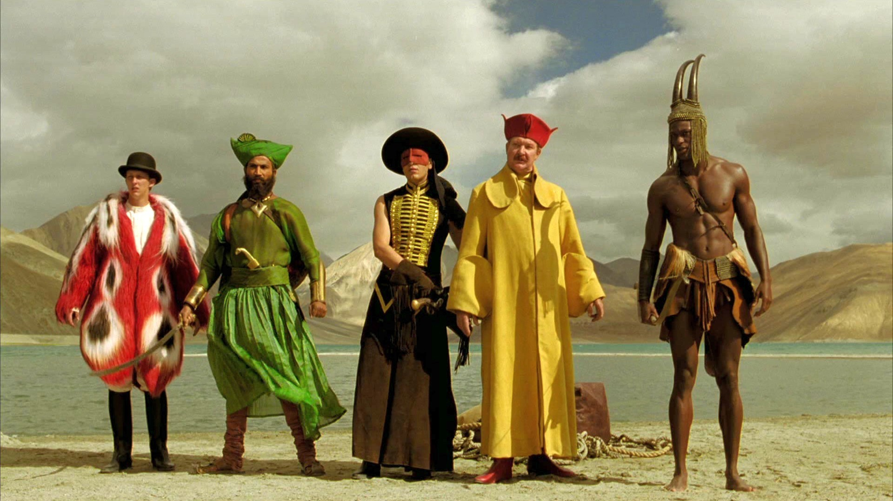

STORY
1915年のロサンゼルス。無声映画のスタントマンをしていたロイは、撮影中に大怪我を負い半身不随となる。挙げ句の果てに主演俳優に恋人を奪われ、自暴自棄になっていた。
そんなとき入院中の病室に現れたのは、オレンジの収穫中に木から落ちて腕を骨折して入院していたルーマニアからの移民の少女アレクサンドリアだった。ロイは、動けない自分に代わって自殺するための薬を少女に盗ませようと思い付き、アレクサンドリアに作り話を聞かせ始める。
それは一人の悪者のために、愛する者や誇りを失い、深い闇に落ちていた6人の勇者達が力を合わせ悪者に立ち向かう【愛と復讐の物語】
しかし、少女を操るためのたわいない寓話は、いつしか少女に希望を与え、やがて自分自身をも救う壮大な物語へと広がっていく。

